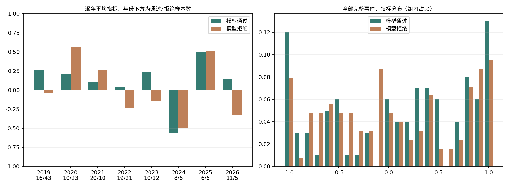

评价日期2026-10-21，行情截至2026-10-20。用户已确认：正负收益相对确认日收盘计算，而非每天相对前一天涨跌。本次更换评价指标，沿用已保存年度模型分数和原有门槛，不重新训练，不修改数据构建与正式策略。
令P0为首次确认日板块收盘，Pt为之后第t个交易日的板块收盘（t=1…20）。
指标 S = [Σ 1(Pt/P0−1 > 0) − Σ 1(Pt/P0−1 < 0)] / 20
确认当天不计入；平价日记0，分母固定20。范围[-1,1]，15天盈利、5天亏损得到0.5；没有平价日时，S=2×盈利天数占比−1。0意味着盈亏天数相等，并不意味着终点收益为0。
这个指标衡量相对信号日收盘的盈利持续性，能区分“途中大多盈利”和“仅终点盈利”。它不度量盈亏幅度：19天微赚、最后一天大跌仍可能得到0.9，因此保留终点收益对照。该收盘价为观察基准，不是假定能够在信号生成后按该价成交。
| 期间 | 完整事件 | 通过 | 拒绝 | 通过组均值 | 拒绝组均值 | 通过减拒绝 | 通过组平均盈利天数 | 拒绝组平均盈利天数 |
|---|---|---|---|---|---|---|---|---|
| 2019–2026 | 226 | 100 | 126 | 0.116 | 0.05 | 0.066 | 11.16 | 10.5 |
| 2019–2025 | 210 | 89 | 121 | 0.112 | 0.065 | 0.047 | 11.12 | 10.65 |
| 2019 | 59 | 16 | 43 | 0.263 | -0.035 | 0.297 | 12.62 | 9.65 |
| 2020 | 33 | 10 | 23 | 0.21 | 0.57 | -0.36 | 12.1 | 15.7 |
| 2021 | 30 | 20 | 10 | 0.1 | 0.27 | -0.17 | 11 | 12.7 |
| 2022 | 40 | 19 | 21 | 0.042 | -0.229 | 0.271 | 10.42 | 7.71 |
| 2023 | 22 | 10 | 12 | 0.24 | -0.142 | 0.382 | 12.4 | 8.58 |
| 2024 | 14 | 8 | 6 | -0.562 | -0.5 | -0.062 | 4.38 | 5 |
| 2025 | 12 | 6 | 6 | 0.5 | 0.517 | -0.017 | 15 | 15.17 |
| 2026 | 16 | 11 | 5 | 0.145 | -0.32 | 0.465 | 11.45 | 6.8 |

事件等权，完整标签仍为226条（通过100、拒绝126）。通过组指标均值+0.116，拒绝组+0.050，差值+0.066。相对未经过模型筛选的完整事件池，通过组提升+0.037。平均盈利天数分别为11.16和10.50天，差+0.66天。
| 期间 | 通过组指标>0占比 | 拒绝组指标>0占比 | 通过组20日终点平均收益 | 拒绝组20日终点平均收益 |
|---|---|---|---|---|
| 2019–2026 | 59.00% | 46.83% | 1.13% | 0.49% |
| 2019–2025 | 59.55% | 47.11% | 0.35% | 0.35% |
| 2019 | 62.50% | 39.53% | -2.16% | -1.15% |
| 2020 | 70.00% | 78.26% | 4.33% | 8.18% |
| 2021 | 60.00% | 60.00% | -0.16% | 1.38% |
| 2022 | 52.63% | 23.81% | 2.94% | -4.02% |
| 2023 | 70.00% | 50.00% | 0.12% | -2.76% |
| 2024 | 25.00% | 16.67% | -7.37% | -3.25% |
| 2025 | 83.33% | 66.67% | 4.56% | 4.41% |
| 2026 | 54.55% | 40.00% | 7.47% | 3.96% |
指标>0表示盈利天数多于亏损天数。此处均为未扣费用的自算板块指数观察，不是交易胜率或账户收益。
同日及临近事件相关，按超过20交易日的日期间隔分行情簇，整簇重采样2000次。以下为描述性95%区间：
| period | metric | estimate | low | high | clusters | replicates |
|---|---|---|---|---|---|---|
| 2019–2026 | passed_mean | 0.116 | -0.072 | 0.285 | 20 | 2000 |
| 2019–2026 | rejected_mean | 0.05 | -0.126 | 0.333 | 20 | 2000 |
| 2019–2026 | difference | 0.066 | -0.205 | 0.252 | 20 | 2000 |
| 2019–2026 | lift_vs_all | 0.037 | -0.116 | 0.135 | 20 | 2000 |
| 2019–2025 | passed_mean | 0.112 | -0.111 | 0.302 | 19 | 2000 |
| 2019–2025 | rejected_mean | 0.065 | -0.122 | 0.367 | 19 | 2000 |
| 2019–2025 | difference | 0.047 | -0.225 | 0.24 | 19 | 2000 |
| 2019–2025 | lift_vs_all | 0.027 | -0.126 | 0.138 | 19 | 2000 |
原预测256条，30条不能评价：29条报价路径或连续段不完整，1条酒店餐饮未满20交易日。2025年37条中25条缺完整标签，不能以剩余12条代表全年。未知路径不取部分天数、不缩分母、不填零。假设未知完整指标可在[-1,1]中任取，完整256条的数学边界如下（不是置信区间）：
| metric | low | high |
|---|---|---|
| passed_mean | 0.0629 | 0.1581 |
| rejected_mean | -0.1238 | 0.2073 |
| difference | -0.1444 | 0.2819 |
2026年仅16条成熟事件；当年较好表现不等于稳定性已验证。整体差异还可能受到各年度通过比例与市场环境影响，应同时查看逐年表。
原模型学习的是20日终点收益，本次回答的是“这个旧模型是否也能筛出盈利持续性更好的事件”。本次没有把新指标改成训练标签。若以后用它训练新模型，需要重新执行年度时间推进、历史内层选参和完整20日标签成熟隔离；不能据这份全历史结果调整门槛后，再把同一批结果当独立测试。
此次口径是看到旧评价后的新增研究定义，需保留这一研究历史。模型文件仍是10月13日按年初信息边界重建，供应商历史版本和成员公告时点的缺口仍在。10月20日养殖业尚未成熟，不纳入该评价。
全部完整事件终点收益与上一份评价逐值一致，完整/缺失集合完全一致；逐事件正/负/平天数之和均为20。原年度研究与前次评价清单哈希通过核对，预测通过集合未改变。
逐事件指标 · 逐日路径与符号 · 逐年数据 · 区间 · 缺失样本
OPENBLAS_NUM_THREADS=1 OMP_NUM_THREADS=1 python alpha_lab/outputs/sector_profit_days_audit/20261021/evaluate.py